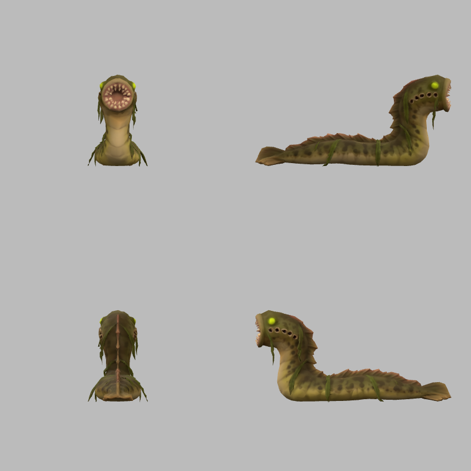

The Sunken Mill's ambusher: your export, with a skeleton and eight moves added by hand. A spotted bog eel with a weed-hung reared neck, a round mouth ringed with teeth and a row of gill pores. It lurks under the floor where only a ripple shows, then breaks the surface and coils while an Ember lane marks the floor, and lunges down it at 10 u/s: every hero it crosses is bitten for 12. The lunge beaches it, thrashing on its side for 110 ticks, before it slides back under. Pick a move, drag to turn it, and judge it. Nothing in the game has changed.
Surface or Swim sets what it does between lunges, and Going turns it on the spot. Lunge plays the game's whole attack from under the floor, on the full 5 u lane with the hero stand-in 3 u ahead on it, and repeats until you press it again. Hurt plays on top of anything. Death drops it: press it again and it spawns back. The bar names the part of the move that is playing, in the game's own words.

It came through whole, as one piece: a long spotted olive eel lying along the floor with its neck reared in a tall curve, a round sucker mouth ringed with pale teeth facing forward, glowing yellow-green eyes, six gill pores a side, a ragged dorsal fin to the tail fin and strands of pond weed hanging off the neck and body.
| Move | What it does | Timing |
|---|---|---|
| Surface | On the surface, breathing. Mine on top: a slow wave down the body, the head swaying to look each way, the mouth breathing open. | Game: breath at 1.9 rad/s. A 6.61 s loop of whole cycles. |
| Swim | The game's S-wave running down the body as fast as it travels. | Game: 1.6 u/s, the wave at 9 times the speed (14.4 rad/s, rounded to whole cycles). |
| Turn left, turn right | Turns on the spot, the body bending into the turn and the head leading. | 180° a second (mine: the game turns it at once). |
| Lunge | The game's attack, its own key poses. It lurks under the floor with only the ripple showing. It breaks the surface and coils to its left, the head reared and cocked back, the mouth opening, while the Ember lane fills. It lunges: thrown out straight and stretched, the head low and leading, the mouth wide, the tail beating, down the whole lane and through the hero. It beaches: snaps back, rolls onto its side and thrashes, lifting its head to gasp, the mouth working. Then it slides back under, and surfaces again so the page can go on. | Game: the rise and the lane 48 ticks (surfacing in 8 frames), the strike the last 2.5 frames, the lunge 0.5 s (5 u at 10 u/s), beached 110 ticks, under again at the game's rate. |
| Hurt | The neck flinches back, the mouth gapes and the tail whips. Plays on top of any move. | 0.4 s |
| Spawn | Grows in, rears with the mouth wide and settles. | Game: grow in 7 frames, about 10% over. The rest is mine. |
| Death | Struck, it rears with the mouth wide; the neck gives out and it rolls onto its side as the head drops to the floor, a last thrash runs down the tail, and it lies still. | Mine: 2.2 s, then it stays down. The game pops every foe where it is. |
| What was measured, on every frame of every move | Result |
|---|---|
| Loops that jump when they restart (surface, swim, both turns) | 0 |
| Beached and rolled on its side | On the floor, not in it: its lowest point measured on every frame of the beach and lifted to the floor (within 1 mm). |
| Lying dead | On the floor, not in it: its lowest point measured on every frame of the fall (1 mm at worst). |
| Under the floor | Only while it lurks, 0.45 u down as in the game, with the neck laid flat so nothing shows but the ripple. |
These numbers come from the model file. I checked the poses as still frames only: the cloud machine cannot play the page at full speed, so the lunge and the thrash are yours to judge.